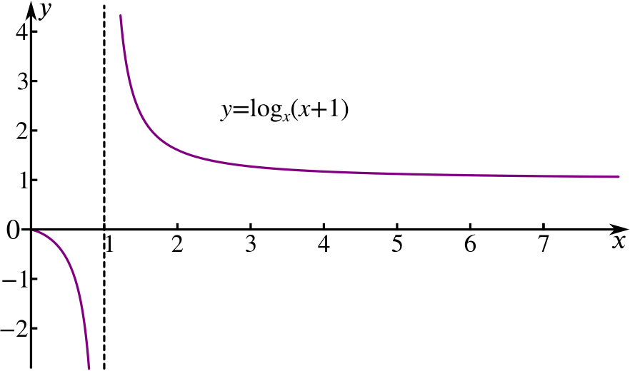
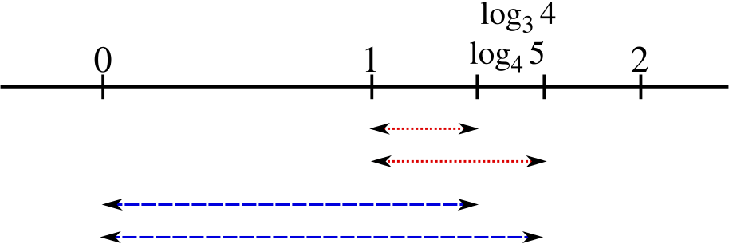

Can you, without using a calculator, arrange these logarithms into order of increasing value?
log45log25log34log33log35log24log23
Initial observations
We can write down exact values for two of these logarithms.
Since log35 is the power of 3 that would give us 5 and 31<5<32 we know the value of log35 must lie between 1 and 2. Can you do the same for other logarithms in the list and use the results to put some of them in order?
Increasing or decreasing?
If we take a series of logarithms all with the same base, we might assume that log of a bigger number will have a bigger value. In other words, the function logx is increasing.
Is this always true, or only for some values of x? Does it depend on the base of the logarithm?
If it is true for the logarithms in our list, we can use this fact to put some of them in order.
It is true that the function logx is increasing for all values of x where it is defined, i.e. x>0, as long as the base is greater than 1.
What if the base is between 0 and 1? For instance, the function log12x? Draw the graph or work out some values if you’re unsure.
The logarithms in our list all have bases greater than 1, so
log23<log24<log25
and
log33<log34<log35 .
Changing bases
If instead, we take a series of logarithms of the same number but to different bases, would these increase or decrease? Think about log28 and log48. Can we use this idea to order some of our logarithms?
More generally, we are asking whether the function logxa is increasing or decreasing - does it depend on the value of a? You could try using graphing software such as Desmos (find loga on its functions menu).
Another way to compare these logarithms of the same number would be to use the rule for changing the base:
logab=logac×logcb .
For instance, to compare log35 and log45, we could write log35=log34×log45 and then note that log34>1, and so log35>log45.
Our network of orderings now looks like this.
Estimating values
It is possible to find some other upper and lower bounds within our list of logarithms by using approximations for the square roots of 2 and 3:
We know that 212≈1.4, so 232=2×212≈2.8.
Therefore 32≈log22.8, and hence log23>32.
Can you use an approximate value of 3⎯⎯√ to find an upper bound for log35?
We could use the following argument.
33232log35=3×312≈3×1.7=5.1≈log35.1<32
From this it follows that log35<log23 which straightens out one more part of our lineup.
Increasing or decreasing again
We shall now look at two possible ways of comparing log34 and log45 which is the last unknown pairing in our lineup.
Firstly, notice that in each of these remaining logarithms, the base is one less than the number whose logarithm we are taking. We could think of them as values of the function logx(x+1). Is this an increasing or decreasing function? Think about its value when x=2 and when x is very large. You could use Desmos to explore it.

This appears to be a decreasing function for x>1 which is the domain we are interested in. When x gets very large, the value of this function will be very close to logx(x)=1 and when x=2 its value is log23 which is certainly bigger than 1.
Different differences
Another way to compare log45 and log34 would be to work out the difference between them,
d=log34−log45 .
If we can show that the difference is positive then we can put the two logarithms in order.
We can’t work out the difference directly, but we could try the following.
log34>log44=1so, d>1−log45but, log45>1
This looked promising but it has only told us that d is greater than some negative number, so it is not helpful in this case.
We can rewrite the expression without changing its value:
d=(log34−1)−(log45−1)=(log34−log33)−(log45−log44)
Can you use the subtraction law of logarithms to rearrange this and show that d>0?
We can complete the argument like this:
d=(log34−log33)−(log45−log44)=log343−log454
Now, log454<log354 because logx54 is a decreasing function for x>1. Therefore,
d>log343−log354=log3((43)(54))=log3(1615)>0
So now we have shown that d is positive, so we can put the two original logarithms in order.
Sometimes, adding zero can help you solve a problem! You may wonder how we knew that subtracting one from each side would help. The answer is that we didn’t know, but…
Looking at this numberline fragment, we already knew the two logarithms were between 1 and 2. By subtracting the ones, we have effectively compared the two red dotted lengths rather than the two blue dashed lengths. What is it that makes that feel like a worthwhile thing to do?

We have shown alternative methods for some steps of the argument. What are the advantages and disadvantages of the different methods?
Finally we have a complete lineup of logarithms.
Can you add some more logarithms to the list and use similar techniques to insert them in the lineup?